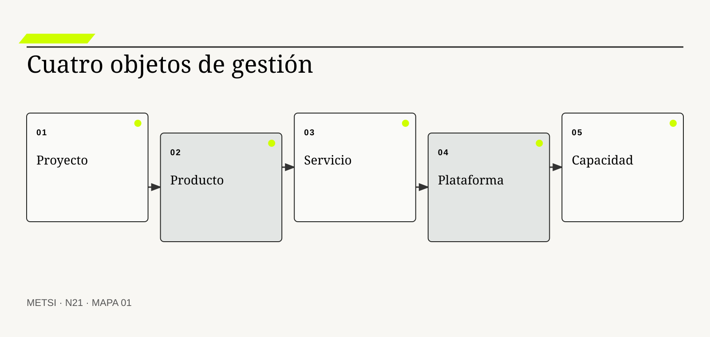
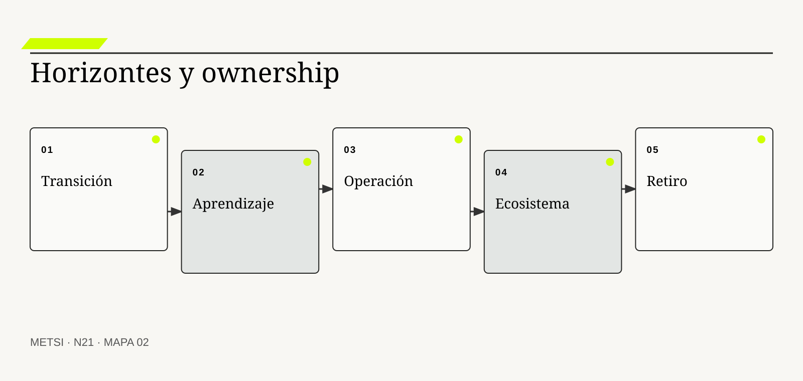
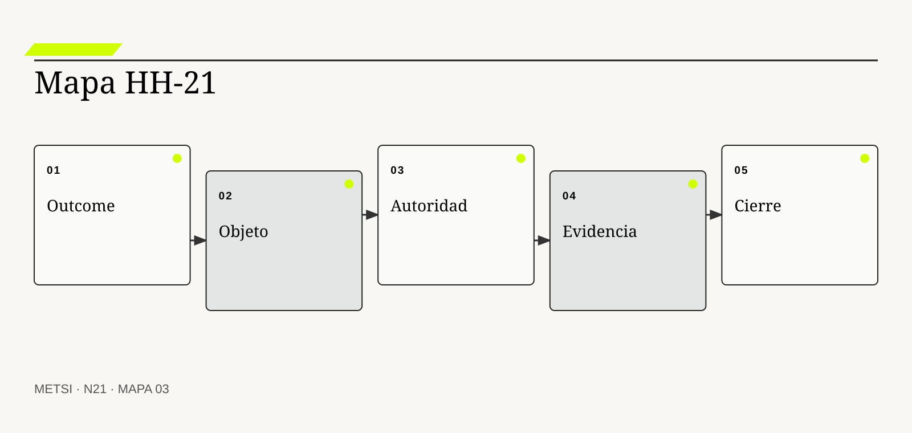

Project Management Institute
Distingue proyectos y dominios de desempeño orientados a valor.

N21 distingue proyecto, producto, servicio y plataforma por su propósito, horizonte, unidad de valor, ownership, evidencia y condición de cierre, y…
Proyecto, producto, servicio y plataforma
Ruta de lectura: problema, distinciones, decisiones, prueba, transferencia y preparación.
Nota. SIN NUM. identifica aparatos de orientación y referencia.
Seis voces para ampliar, contrastar y discutir N21.
Distingue proyectos y dominios de desempeño orientados a valor.
Desarrolló una práctica de producto centrada en problemas, resultados y equipos empoderados.

Formula la gestión de servicios como cocreación de valor.
Analizaron plataformas, efectos de red y gobierno de ecosistemas.

Vinculó flujo de valor, producto y financiación organizacional.
Relaciona equipos, plataformas internas y flujo de cambio.
N21 no resume estas fuentes ni las convierte en receta. Las pone en tensión para construir juicio profesional.
¿Qué cambia cuando una iniciativa deja de administrarse como entrega temporal y empieza a gobernarse como capacidad que alguien usa, opera y comparte?

N21 distingue proyecto, producto, servicio y plataforma por su propósito, horizonte, unidad de valor, ownership, evidencia y condición de cierre, y muestra cómo pueden…
Hotel Horizonte cierra la implementación del nuevo circuito de ingreso. El alcance fue entregado, el presupuesto quedó dentro del umbral y el acta de aceptación enumera interfaces, capacitación y migración. Dos semanas después, Recepción acumula excepciones, Housekeeping crea una planilla auxiliar y Comercial pide una regla que el contrato no contemplaba.
La dirección pregunta por qué el proyecto no resolvió el problema. Tecnología responde que el producto funciona; el proveedor sostiene que el servicio se presta según el acuerdo; Operaciones señala que la plataforma común todavía obliga a coordinar a mano con cerraduras, pagos y canales externos. Las cuatro afirmaciones pueden ser ciertas y, sin embargo, describir objetos distintos.
Proyecto nombra una organización temporal para producir cambio. Producto nombra una propuesta de valor que evoluciona. Servicio nombra una promesa sostenida en uso. Plataforma nombra una base compartida que habilita interacciones y capacidades de otros. Si se confunden, el cierre administrativo puede parecer resultado, una interfaz puede reemplazar a la experiencia y una infraestructura común puede gobernarse como si tuviera un único cliente.
El equipo vuelve a HH-20 y separa temporalidad, ownership, outcome, operación y ecosistema. Conserva el proyecto como vehículo de transición, asigna un responsable de producto para la capacidad de ingreso, explicita el servicio prometido al huésped y trata las integraciones como decisiones de plataforma con reglas de acceso, evolución y salida.
La distinción no busca elegir una palabra moderna. Cambia presupuesto, métricas, horizonte, autoridad y evidencia. También muestra que un mismo sistema puede contener los cuatro objetos sin que uno absorba a los demás.
N21 abre el Bloque E. Recibe una estrategia situada y pregunta qué objeto se está gobernando. La respuesta prepara una gestión orientada a capacidades, aprendizaje y operación antes de discutir hipótesis, cortes y flujo.
HH-20 dejó una estrategia con puertas, evidencia y condiciones de salida. HH-21 la reorganiza en cuatro capas: un proyecto temporal para la transición, un producto que aprende sobre el problema de ingreso, un servicio que sostiene la promesa durante cada turno y una plataforma que permite a canales, cerraduras, pagos y analítica participar sin perder contratos ni autoridad.
N21 distingue proyecto, producto, servicio y plataforma por su propósito, horizonte, unidad de valor, ownership, evidencia y condición de cierre, y muestra cómo pueden coexistir alrededor de una capacidad.
N20 deja evidencia y decisiones abiertas que N21 utiliza sin reabrir su contenido. N21 distingue proyecto, producto, servicio y plataforma por su propósito, horizonte, unidad de valor, ownership, evidencia y condición de cierre, y muestra cómo pueden coexistir alrededor de una capacidad.
N22 recibirá esta arquitectura y convertirá sus iniciativas en hipótesis refutables. N21 no decide todavía qué apuesta merece inversión ni cómo probarla.
Project Management Institute provee principios y dominios que deben adaptarse al contexto y al valor. En N21, ese aporte pone a prueba decisiones concretas y no funciona como respaldo ornamental. Su alcance se conserva en N21: ninguna referencia sustituye la evidencia del caso ni la autoridad necesaria para intervenir.
Project Management Institute distingue coordinación temporal y capacidades sostenidas. En N21, ese aporte pone a prueba decisiones concretas y no funciona como respaldo ornamental. Su alcance se conserva en N21: ninguna referencia sustituye la evidencia del caso ni la autoridad necesaria para intervenir.
Cagan, M. vincula producto con problemas, outcomes y aprendizaje. En N21, ese aporte pone a prueba decisiones concretas y no funciona como respaldo ornamental. Su alcance se conserva en N21: ninguna referencia sustituye la evidencia del caso ni la autoridad necesaria para intervenir.
Cagan, M. y Jones, C. relacionan ownership con autoridad y equipos responsables. En N21, ese aporte pone a prueba decisiones concretas y no funciona como respaldo ornamental. Su alcance se conserva en N21: ninguna referencia sustituye la evidencia del caso ni la autoridad necesaria para intervenir.
AXELOS define servicio como cocreación de valor y capacidad sostenida. En N21, ese aporte pone a prueba decisiones concretas y no funciona como respaldo ornamental. Su alcance se conserva en N21: ninguna referencia sustituye la evidencia del caso ni la autoridad necesaria para intervenir.
ISO/IEC establece requisitos para gobernar sistemas de gestión de servicios. En N21, ese aporte pone a prueba decisiones concretas y no funciona como respaldo ornamental. Su alcance se conserva en N21: ninguna referencia sustituye la evidencia del caso ni la autoridad necesaria para intervenir.
Parker, G. G., Van Alstyne, M. W. y Choudary, S. P. explica efectos de red y decisiones de gobierno de plataformas. En N21, ese aporte pone a prueba decisiones concretas y no funciona como respaldo ornamental. Su alcance se conserva en N21: ninguna referencia sustituye la evidencia del caso ni la autoridad necesaria para intervenir.
Tiwana, A. analiza arquitectura, interfaces y evolución de ecosistemas. En N21, ese aporte pone a prueba decisiones concretas y no funciona como respaldo ornamental. Su alcance se conserva en N21: ninguna referencia sustituye la evidencia del caso ni la autoridad necesaria para intervenir.
Kersten, M. conecta financiación, producto y flujo de valor. En N21, ese aporte pone a prueba decisiones concretas y no funciona como respaldo ornamental. Su alcance se conserva en N21: ninguna referencia sustituye la evidencia del caso ni la autoridad necesaria para intervenir.
Skelton, M. y Pais, M. relacionan formas de equipo con flujo y plataformas internas. En N21, ese aporte pone a prueba decisiones concretas y no funciona como respaldo ornamental. Su alcance se conserva en N21: ninguna referencia sustituye la evidencia del caso ni la autoridad necesaria para intervenir.
Forsgren, N., Humble, J. y Kim, G. aportan evidencia sobre capacidades de entrega y desempeño. En N21, ese aporte pone a prueba decisiones concretas y no funciona como respaldo ornamental. Su alcance se conserva en N21: ninguna referencia sustituye la evidencia del caso ni la autoridad necesaria para intervenir.
Google Cloud aporta evidencia sobre capacidades de entrega y desempeño. En N21, ese aporte pone a prueba decisiones concretas y no funciona como respaldo ornamental. Su alcance se conserva en N21: ninguna referencia sustituye la evidencia del caso ni la autoridad necesaria para intervenir.

Un proyecto es una organización temporal creada para producir un cambio definido bajo restricciones explícitas. La definición fija el objeto de decisión. Si el equipo de N21 no puede expresar qué compromiso organiza, la categoría funciona como etiqueta y no como instrumento.
No es el sistema permanente, el equipo estable ni el valor producido después del cierre. La distinción evita que una palabra familiar oculte otro mecanismo. En N21, confundirlos cambia qué se observa, qué se acepta como avance y quién debe intervenir.
En proyecto, el recorrido causal debe mostrar qué condición habilita la acción, qué transformación ocurre y quién absorbe el resultado. Coordina trabajo, dependencias y compromisos hasta transferir resultados y responsabilidades. Si un salto depende sólo de una explicación oral, la estrategia todavía no puede gobernarlo.
La evidencia relevante para proyecto no se limita al resultado promedio. Se sostiene con entregables aceptados, riesgos tratados, decisiones registradas y capacidad de transferencia. N21 busca además casos negativos, diferencias entre poblaciones y señales de que la explicación elegida podría ser insuficiente.
Ejemplo. La migración del circuito de ingreso tiene comienzo, presupuesto, hitos y cierre. En N21, el episodio vuelve visible la relación entre ritmo, autoridad, evidencia y capacidad de reparación.
El tradeoff central de proyecto aparece entre anticipar y preservar opciones. Anticipar puede reducir coordinación y también fijar una premisa prematura; preservar opciones puede producir aprendizaje y también demorar una protección necesaria. La elección debe declarar cuál de esos costos acepta, durante cuánto tiempo y para quién.
La auditoría de proyecto termina con una pregunta de uso: ¿qué podría decidir ahora una persona que antes no podía? En N21, la respuesta debe nombrar una acción, una restricción y una evidencia, no sólo una comprensión mejorada.
Operacionalizar proyecto requiere asignar una unidad observable. El equipo define qué episodio contará, desde qué momento, con qué población y bajo qué fuente. Después compara al menos un caso ordinario con otro que fuerce excepción. Esta precisión en N21 evita que una conclusión general se sostenga sólo en ejemplos convenientes.
La decisión profesional no termina en adoptar proyecto. Se compara una ruta principal con una explicación rival, se explicita quién queda expuesto y se conserva un modo de revisar. Puede terminar con éxito aunque el outcome no se sostenga; por eso no reemplaza la gestión posterior. El límite forma parte del diseño y no una nota posterior.
Un producto es una propuesta de valor que evoluciona mediante decisiones continuas sobre problemas, resultados y capacidades. Conviene comenzar por su función profesional. Si el equipo de N21 no puede expresar qué compromiso organiza, la categoría funciona como etiqueta y no como instrumento.
No se reduce a software, interfaz, backlog ni conjunto de funcionalidades. El contraste importa porque conduce a pruebas distintas. En N21, confundirlos cambia qué se observa, qué se acepta como avance y quién debe intervenir.
El mecanismo de producto no se presume por el nombre. Integra descubrimiento, construcción, medición y aprendizaje bajo ownership persistente. Debe localizarse dónde comienza, qué relaciones activa, qué demora introduce y qué capacidad de reparación queda disponible cuando la expectativa no se cumple.
Una afirmación sobre producto gana fuerza cuando puede reconstruirse desde fuentes independientes. Se prueba con cambios observables en uso, outcome, viabilidad y capacidad de adaptación. La ausencia de señal también se interpreta: puede significar estabilidad, mala observación o exclusión del caso que más importa.
Ejemplo. El circuito de ingreso es producto cuando aprende a reducir espera sin trasladar daño. En N21, el episodio vuelve visible la relación entre ritmo, autoridad, evidencia y capacidad de reparación.
La escala modifica producto. Una solución válida para un equipo puede fallar cuando atraviesa sedes, turnos o proveedores porque aumenta la distancia entre señal y autoridad. Antes de ampliar, N21 prueba si la misma decisión conserva significado y reparación bajo esa nueva distribución.
Para evitar consenso aparente, producto se revisa con alguien afectado y con alguien responsable de reparar. Las dos perspectivas pueden valorar resultados diferentes y obligan a declarar la prioridad elegida.
En la práctica, producto atraviesa más de un área. Se identifican handoffs, esperas, decisiones y datos que cada participante puede ver. Cuando dos áreas usan evidencia distinta en N21, el expediente conserva la divergencia hasta determinar si representa error, perspectiva legítima o una brecha que la estrategia debe resolver.
En una revisión, producto debe responder tres preguntas: qué mejora, qué desplaza y qué vuelve más difícil de revertir. Puede no ser el objeto adecuado para obligaciones estables o infraestructura compartida. Si esas respuestas cambian, también debe cambiar el compromiso, aunque el trabajo previo haya sido técnicamente correcto.
Un servicio es una promesa de resultado que una organización sostiene junto con quienes lo usan y operan. El concepto adquiere valor cuando cambia una decisión. Si el equipo de N21 no puede expresar qué compromiso organiza, la categoría funciona como etiqueta y no como instrumento.
No equivale al canal digital ni al acuerdo de niveles de servicio aislado. Su vecino conceptual puede parecer equivalente y no lo es. En N21, confundirlos cambia qué se observa, qué se acepta como avance y quién debe intervenir.
Comprender servicio exige seguir la decisión en el tiempo. Combina personas, tecnología, reglas, evidencia y reparación durante la experiencia real. El análisis distingue condición, intervención, señal temprana y consecuencia para evitar atribuir a una práctica un efecto producido por otro cambio simultáneo.
La prueba de servicio debe formularse antes de conocer el resultado. Se observa en continuidad, calidad, accesibilidad, recuperación y percepción de quienes reciben la prestación. Se registra qué observación sostendría continuar, cuál obligaría a adaptar y cuál activaría detención o escalamiento.
Ejemplo. Entregar una habitación asignable y accesible es servicio aunque intervengan varios productos. En N21, el episodio vuelve visible la relación entre ritmo, autoridad, evidencia y capacidad de reparación.
El tiempo también altera servicio. Una evidencia suficiente para explorar puede ser insuficiente para operar de forma permanente. Por eso se separan prueba local, compromiso transitorio y condición estable, y cada estado conserva fecha, alcance y responsable de revisión.
El registro de servicio conserva una explicación rival. Si esa alternativa predice mejor el episodio siguiente, el equipo cambia de curso sin reescribir retrospectivamente lo que creía saber.
La gobernanza de servicio incluye quién puede proponer, aprobar, ejecutar, observar y reparar. Esas funciones no se presumen por cargo ni por permiso técnico. N21 las prueba en un escenario donde falta la persona habitual, porque una capacidad que sólo funciona con conocimiento privado todavía no pertenece a la organización.
El juicio sobre servicio incluye distribución de consecuencias. Una prestación puede cumplir métricas técnicas y quebrar la promesa para una población. Una mejora agregada no alcanza si concentra espera, riesgo o trabajo invisible en un grupo sin autoridad para discutir la decisión.
Una plataforma es una base gobernada de capacidades compartidas que permite a múltiples participantes crear y coordinar valor. La definición fija el objeto de decisión. Si el equipo de N21 no puede expresar qué compromiso organiza, la categoría funciona como etiqueta y no como instrumento.
No es sólo infraestructura, portal, arquitectura ni producto grande. La distinción evita que una palabra familiar oculte otro mecanismo. En N21, confundirlos cambia qué se observa, qué se acepta como avance y quién debe intervenir.
La explicación operacional de plataforma conecta personas, reglas y tecnología. Ofrece servicios comunes, interfaces, estándares y reglas que reducen coordinación sin borrar autonomía. Esa conexión permite decidir qué parte puede modificarse localmente y cuál requiere coordinación con otras autoridades o capacidades.
Para auditar plataforma, conviene combinar evidencia de diseño, ejecución y consecuencia. Se evalúa por adopción útil, confiabilidad, reutilización, costos de integración y salud del ecosistema. Ninguna fuente domina automáticamente; una especificación correcta puede convivir con una operación dañina.
Ejemplo. Identidad, pagos y estados hoteleros habilitan canales internos y externos. En N21, el episodio vuelve visible la relación entre ritmo, autoridad, evidencia y capacidad de reparación.
Existe además una dimensión política en plataforma. La opción más eficiente puede reducir la capacidad de una persona para cuestionar una decisión o trasladar trabajo sin reconocerlo. N21 registra esa distribución y no la esconde dentro de un indicador agregado.
Una prueba adversa de plataforma introduce demora, ausencia de autoridad o dato incompleto. El objetivo de N21 no es cubrir todas las fallas, sino revelar si la estrategia mantiene una salida segura fuera del camino ordinario.
El indicador de plataforma se elige después de formular la decisión. Puede combinar tiempo, calidad, distribución y costo de reparación. Una cifra aislada rara vez explica el mecanismo. En N21, la lectura conjunta de señales evita optimizar velocidad mientras aumenta retrabajo, exclusión o dependencia.
La condición de cierre de plataforma no es perfección. Centralizar sin gobernanza puede crear dependencia, cuello de botella y poder sin rendición de cuentas. Es evidencia suficiente para el uso previsto, riesgo residual aceptado por autoridad y una ruta clara cuando el supuesto deje de cumplirse.

El horizonte temporal expresa cuánto dura el objeto y cuándo cambia su forma de gobierno. Conviene comenzar por su función profesional. Si el equipo de N21 no puede expresar qué compromiso organiza, la categoría funciona como etiqueta y no como instrumento.
No es la fecha del roadmap ni la duración estimada de una tarea. El contraste importa porque conduce a pruebas distintas. En N21, confundirlos cambia qué se observa, qué se acepta como avance y quién debe intervenir.
Para que horizonte temporal sea algo más que una etiqueta, debe existir una cadena examinable. Los proyectos terminan; productos, servicios y plataformas persisten mientras sostengan una capacidad relevante. La cadena incluye supuestos, handoffs y efectos laterales que una descripción ideal suele omitir.
El equipo no declara resuelto horizonte temporal por acuerdo retórico. La evidencia incluye continuidad de ownership, presupuesto, obligaciones y decisiones posteriores al lanzamiento. Una persona ajena al diseño debe poder repetir la prueba y comprender por qué el resultado habilita una decisión concreta.
Ejemplo. El proyecto cierra, pero las excepciones del ingreso siguen necesitando gobierno. En N21, el episodio vuelve visible la relación entre ritmo, autoridad, evidencia y capacidad de reparación.
La mantenibilidad de horizonte temporal se prueba mediante cambio deliberado. Se modifica una regla, una fuente o una dependencia y se observa quién detecta el impacto, cuánto tarda en responder y qué información necesita. En N21, si la respuesta depende de memoria privada, la capacidad todavía es frágil.
El costo de horizonte temporal se observa tanto en presupuesto como en atención, espera, coordinación y dependencia. Lo que no figura en una factura puede seguir siendo el costo que define la viabilidad.
La transición asociada con horizonte temporal necesita un estado intermedio explícito. Durante ese período conviven reglas, versiones o capacidades diferentes. N21 declara cuál rige para cada población, cómo se comunica y qué contingencia protege a quien podría quedar entre ambos sistemas.
El análisis de horizonte temporal evita dos extremos: conservar por inercia y cambiar por identidad metodológica. Declarar permanente un objeto sin criterio de retiro inmoviliza recursos y legado. Entre ambos queda una decisión provisional con fecha, responsable y prueba de revisión.
La unidad de valor define qué cambio significativo justifica inversión y aprendizaje. El concepto adquiere valor cuando cambia una decisión. Si el equipo de N21 no puede expresar qué compromiso organiza, la categoría funciona como etiqueta y no como instrumento.
No coincide necesariamente con feature, entrega, transacción ni utilización. Su vecino conceptual puede parecer equivalente y no lo es. En N21, confundirlos cambia qué se observa, qué se acepta como avance y quién debe intervenir.
El valor de unidad de valor aparece al contrastar alternativas. Conecta una necesidad con una capacidad y una consecuencia observable para actores concretos. Si dos opciones producen el mismo entregable inmediato, el mecanismo permite compararlas por aprendizaje, dependencia, riesgo residual y posibilidad de salida.
La suficiencia de evidencia para unidad de valor depende del costo de equivocarse. Se fortalece cuando el outcome puede distinguirse de actividad, volumen y efecto ajeno. A mayor irreversibilidad o desigualdad de daño, mayor contraste, supervisión y autoridad se requieren.
Ejemplo. Menor espera con igual protección accesible vale más que más check-ins procesados. En N21, el episodio vuelve visible la relación entre ritmo, autoridad, evidencia y capacidad de reparación.
Finalmente, unidad de valor debe convivir con otras decisiones. Optimizarla de manera aislada puede empeorar flujo, seguridad o comprensión. El expediente N21 explicita dependencias y evita que una mejora local se presente como outcome completo del sistema.
La revisión de unidad de valor fija fecha y desencadenante. Puede ocurrir por incidente, cambio normativo, nueva población o evidencia acumulada. Sin esa regla en N21, una decisión provisional se vuelve permanente por olvido.
El cierre de unidad de valor debe sobrevivir a una revisión independiente. La evidencia, las decisiones y los límites se almacenan de manera que otra persona pueda cuestionarlos. En N21, la trazabilidad no busca eliminar desacuerdo; busca que el desacuerdo se concentre en supuestos examinables y no en recuerdos incompatibles.
La estrategia debe poder explicar por qué unidad de valor recibe cierta inversión y no otra. Una única unidad puede ocultar impactos distributivos o costos de operación. Esa explicación conecta valor, costo, aprendizaje y reparación, y permanece abierta a evidencia nueva.
Ownership persistente es autoridad y responsabilidad continuas sobre decisiones, evidencia y consecuencias. La definición fija el objeto de decisión. Si el equipo de N21 no puede expresar qué compromiso organiza, la categoría funciona como etiqueta y no como instrumento.
No es un nombre en un organigrama ni la función temporal de un jefe de proyecto. La distinción evita que una palabra familiar oculte otro mecanismo. En N21, confundirlos cambia qué se observa, qué se acepta como avance y quién debe intervenir.
En ownership persistente, el recorrido causal debe mostrar qué condición habilita la acción, qué transformación ocurre y quién absorbe el resultado. Mantiene memoria, priorización, aprendizaje y reparación más allá de cada entrega. Si un salto depende sólo de una explicación oral, la estrategia todavía no puede gobernarlo.
La evidencia relevante para ownership persistente no se limita al resultado promedio. Se verifica cuando existe capacidad real para cambiar, detener, financiar y responder por el resultado. N21 busca además casos negativos, diferencias entre poblaciones y señales de que la explicación elegida podría ser insuficiente.
Ejemplo. Una responsable de producto puede revisar la regla después del cierre contractual. En N21, el episodio vuelve visible la relación entre ritmo, autoridad, evidencia y capacidad de reparación.
El tradeoff central de ownership persistente aparece entre anticipar y preservar opciones. Anticipar puede reducir coordinación y también fijar una premisa prematura; preservar opciones puede producir aprendizaje y también demorar una protección necesaria. La elección debe declarar cuál de esos costos acepta, durante cuánto tiempo y para quién.
La auditoría de ownership persistente termina con una pregunta de uso: ¿qué podría decidir ahora una persona que antes no podía? En N21, la respuesta debe nombrar una acción, una restricción y una evidencia, no sólo una comprensión mejorada.
Operacionalizar ownership persistente requiere asignar una unidad observable. El equipo define qué episodio contará, desde qué momento, con qué población y bajo qué fuente. Después compara al menos un caso ordinario con otro que fuerce excepción. Esta precisión en N21 evita que una conclusión general se sostenga sólo en ejemplos convenientes.
La decisión profesional no termina en adoptar ownership persistente. Se compara una ruta principal con una explicación rival, se explicita quién queda expuesto y se conserva un modo de revisar. Responsabilidad sin presupuesto, información o poder de decisión es sólo imputación. El límite forma parte del diseño y no una nota posterior.
Operación como diseño trata uso, soporte, excepción y recuperación como parte del objeto gestionado. Conviene comenzar por su función profesional. Si el equipo de N21 no puede expresar qué compromiso organiza, la categoría funciona como etiqueta y no como instrumento.
No es una etapa posterior ni un costo inevitable que se delega al área operativa. El contraste importa porque conduce a pruebas distintas. En N21, confundirlos cambia qué se observa, qué se acepta como avance y quién debe intervenir.
El mecanismo de operación como diseño no se presume por el nombre. La capacidad se completa cuando funciona en turnos, picos, ausencias y fallas. Debe localizarse dónde comienza, qué relaciones activa, qué demora introduce y qué capacidad de reparación queda disponible cuando la expectativa no se cumple.
Una afirmación sobre operación como diseño gana fuerza cuando puede reconstruirse desde fuentes independientes. Incidentes, retrabajo, demanda de falla y tiempo de reparación revelan la calidad real. La ausencia de señal también se interpreta: puede significar estabilidad, mala observación o exclusión del caso que más importa.
Ejemplo. El turno nocturno debe resolver una habitación bloqueada sin llamar al equipo del proyecto. En N21, el episodio vuelve visible la relación entre ritmo, autoridad, evidencia y capacidad de reparación.
La escala modifica operación como diseño. Una solución válida para un equipo puede fallar cuando atraviesa sedes, turnos o proveedores porque aumenta la distancia entre señal y autoridad. Antes de ampliar, N21 prueba si la misma decisión conserva significado y reparación bajo esa nueva distribución.
Para evitar consenso aparente, operación como diseño se revisa con alguien afectado y con alguien responsable de reparar. Las dos perspectivas pueden valorar resultados diferentes y obligan a declarar la prioridad elegida.
En la práctica, operación como diseño atraviesa más de un área. Se identifican handoffs, esperas, decisiones y datos que cada participante puede ver. Cuando dos áreas usan evidencia distinta en N21, el expediente conserva la divergencia hasta determinar si representa error, perspectiva legítima o una brecha que la estrategia debe resolver.
En una revisión, operación como diseño debe responder tres preguntas: qué mejora, qué desplaza y qué vuelve más difícil de revertir. Diseñar sólo para el camino feliz produce valor aparente y deuda operativa. Si esas respuestas cambian, también debe cambiar el compromiso, aunque el trabajo previo haya sido técnicamente correcto.

Un ecosistema reúne actores interdependientes que crean, capturan y condicionan valor mediante reglas e interfaces. El concepto adquiere valor cuando cambia una decisión. Si el equipo de N21 no puede expresar qué compromiso organiza, la categoría funciona como etiqueta y no como instrumento.
No es una lista de stakeholders ni una cadena lineal de proveedores. Su vecino conceptual puede parecer equivalente y no lo es. En N21, confundirlos cambia qué se observa, qué se acepta como avance y quién debe intervenir.
Comprender ecosistema exige seguir la decisión en el tiempo. Cambios locales alteran incentivos, datos, riesgos y posibilidades de otros participantes. El análisis distingue condición, intervención, señal temprana y consecuencia para evitar atribuir a una práctica un efecto producido por otro cambio simultáneo.
La prueba de ecosistema debe formularse antes de conocer el resultado. Se observa en dependencias, efectos de red, costos de cambio, disputas y mecanismos de coordinación. Se registra qué observación sostendría continuar, cuál obligaría a adaptar y cuál activaría detención o escalamiento.
Ejemplo. Un canal puede vender antes y trasladar excepciones a Recepción. En N21, el episodio vuelve visible la relación entre ritmo, autoridad, evidencia y capacidad de reparación.
El tiempo también altera ecosistema. Una evidencia suficiente para explorar puede ser insuficiente para operar de forma permanente. Por eso se separan prueba local, compromiso transitorio y condición estable, y cada estado conserva fecha, alcance y responsable de revisión.
El registro de ecosistema conserva una explicación rival. Si esa alternativa predice mejor el episodio siguiente, el equipo cambia de curso sin reescribir retrospectivamente lo que creía saber.
La gobernanza de ecosistema incluye quién puede proponer, aprobar, ejecutar, observar y reparar. Esas funciones no se presumen por cargo ni por permiso técnico. N21 las prueba en un escenario donde falta la persona habitual, porque una capacidad que sólo funciona con conocimiento privado todavía no pertenece a la organización.
El juicio sobre ecosistema incluye distribución de consecuencias. La expansión del ecosistema puede aumentar valor y también concentración o exclusión. Una mejora agregada no alcanza si concentra espera, riesgo o trabajo invisible en un grupo sin autoridad para discutir la decisión.
Financiar por capacidad asigna recursos a un outcome y a la posibilidad de sostenerlo, aprender y repararlo. La definición fija el objeto de decisión. Si el equipo de N21 no puede expresar qué compromiso organiza, la categoría funciona como etiqueta y no como instrumento.
No significa presupuesto ilimitado ni ausencia de control por iniciativa. La distinción evita que una palabra familiar oculte otro mecanismo. En N21, confundirlos cambia qué se observa, qué se acepta como avance y quién debe intervenir.
La explicación operacional de financiación por capacidad conecta personas, reglas y tecnología. Reduce reinicios y handoffs al sostener equipos y decisiones alrededor del problema. Esa conexión permite decidir qué parte puede modificarse localmente y cuál requiere coordinación con otras autoridades o capacidades.
Para auditar financiación por capacidad, conviene combinar evidencia de diseño, ejecución y consecuencia. Se evalúa por outcomes, opciones preservadas, costo total y decisiones de continuidad. Ninguna fuente domina automáticamente; una especificación correcta puede convivir con una operación dañina.
Ejemplo. Ingreso recibe una capacidad estable con fondos para operación y aprendizaje. En N21, el episodio vuelve visible la relación entre ritmo, autoridad, evidencia y capacidad de reparación.
Existe además una dimensión política en financiación por capacidad. La opción más eficiente puede reducir la capacidad de una persona para cuestionar una decisión o trasladar trabajo sin reconocerlo. N21 registra esa distribución y no la esconde dentro de un indicador agregado.
Una prueba adversa de financiación por capacidad introduce demora, ausencia de autoridad o dato incompleto. El objetivo de N21 no es cubrir todas las fallas, sino revelar si la estrategia mantiene una salida segura fuera del camino ordinario.
El indicador de financiación por capacidad se elige después de formular la decisión. Puede combinar tiempo, calidad, distribución y costo de reparación. Una cifra aislada rara vez explica el mecanismo. En N21, la lectura conjunta de señales evita optimizar velocidad mientras aumenta retrabajo, exclusión o dependencia.
La condición de cierre de financiación por capacidad no es perfección. Sin límites y revisión, la financiación persistente puede proteger productos sin valor. Es evidencia suficiente para el uso previsto, riesgo residual aceptado por autoridad y una ruta clara cuando el supuesto deje de cumplirse.
La gobernanza del portafolio compara inversiones por contribución, dependencia, riesgo y aprendizaje. Conviene comenzar por su función profesional. Si el equipo de N21 no puede expresar qué compromiso organiza, la categoría funciona como etiqueta y no como instrumento.
No es ordenar proyectos por retorno estimado ni sumar roadmaps independientes. El contraste importa porque conduce a pruebas distintas. En N21, confundirlos cambia qué se observa, qué se acepta como avance y quién debe intervenir.
Para que gobernanza del portafolio sea algo más que una etiqueta, debe existir una cadena examinable. Hace visibles capacidades compartidas, conflictos de recursos y compromisos que compiten. La cadena incluye supuestos, handoffs y efectos laterales que una descripción ideal suele omitir.
El equipo no declara resuelto gobernanza del portafolio por acuerdo retórico. Escenarios, outcomes y costos de demora permiten discutir qué iniciar, sostener o retirar. Una persona ajena al diseño debe poder repetir la prueba y comprender por qué el resultado habilita una decisión concreta.
Ejemplo. La plataforma de identidad puede habilitar varias iniciativas y requerir prioridad distinta. En N21, el episodio vuelve visible la relación entre ritmo, autoridad, evidencia y capacidad de reparación.
La mantenibilidad de gobernanza del portafolio se prueba mediante cambio deliberado. Se modifica una regla, una fuente o una dependencia y se observa quién detecta el impacto, cuánto tarda en responder y qué información necesita. En N21, si la respuesta depende de memoria privada, la capacidad todavía es frágil.
El costo de gobernanza del portafolio se observa tanto en presupuesto como en atención, espera, coordinación y dependencia. Lo que no figura en una factura puede seguir siendo el costo que define la viabilidad.
La transición asociada con gobernanza del portafolio necesita un estado intermedio explícito. Durante ese período conviven reglas, versiones o capacidades diferentes. N21 declara cuál rige para cada población, cómo se comunica y qué contingencia protege a quien podría quedar entre ambos sistemas.
El análisis de gobernanza del portafolio evita dos extremos: conservar por inercia y cambiar por identidad metodológica. La comparación numérica no elimina elecciones políticas ni derechos no negociables. Entre ambos queda una decisión provisional con fecha, responsable y prueba de revisión.
Cierre y retiro son decisiones diferentes: una termina el vehículo temporal y la otra deja de sostener una capacidad. El concepto adquiere valor cuando cambia una decisión. Si el equipo de N21 no puede expresar qué compromiso organiza, la categoría funciona como etiqueta y no como instrumento.
No deben confundirse con lanzamiento, aceptación ni apagado técnico. Su vecino conceptual puede parecer equivalente y no lo es. En N21, confundirlos cambia qué se observa, qué se acepta como avance y quién debe intervenir.
El valor de cierre y retiro aparece al contrastar alternativas. El cierre transfiere; el retiro comunica, migra, preserva evidencia y repara dependencias. Si dos opciones producen el mismo entregable inmediato, el mecanismo permite compararlas por aprendizaje, dependencia, riesgo residual y posibilidad de salida.
La suficiencia de evidencia para cierre y retiro depende del costo de equivocarse. Se prueba con roles operativos, inventario, datos, contratos, contingencia y usuarios afectados. A mayor irreversibilidad o desigualdad de daño, mayor contraste, supervisión y autoridad se requieren.
Ejemplo. El proyecto cierra mientras el producto sigue; una integración se retira con ruta alternativa. En N21, el episodio vuelve visible la relación entre ritmo, autoridad, evidencia y capacidad de reparación.
Finalmente, cierre y retiro debe convivir con otras decisiones. Optimizarla de manera aislada puede empeorar flujo, seguridad o comprensión. El expediente N21 explicita dependencias y evita que una mejora local se presente como outcome completo del sistema.
La revisión de cierre y retiro fija fecha y desencadenante. Puede ocurrir por incidente, cambio normativo, nueva población o evidencia acumulada. Sin esa regla en N21, una decisión provisional se vuelve permanente por olvido.
El cierre de cierre y retiro debe sobrevivir a una revisión independiente. La evidencia, las decisiones y los límites se almacenan de manera que otra persona pueda cuestionarlos. En N21, la trazabilidad no busca eliminar desacuerdo; busca que el desacuerdo se concentre en supuestos examinables y no en recuerdos incompatibles.
La estrategia debe poder explicar por qué cierre y retiro recibe cierta inversión y no otra. Cerrar sin transferencia crea abandono y retirar sin ecosistema produce daño lateral. Esa explicación conecta valor, costo, aprendizaje y reparación, y permanece abierta a evidencia nueva.
El instrumento organiza una decisión concreta y no una descripción total. Cada campo debe completarse con evidencia disponible, incertidumbre explícita y autoridad identificada. Si un campo todavía no puede responderse, se registra como asunto abierto y no se completa por inferencia.
El expediente se prueba con un escenario ordinario y uno adverso. Una persona que no participó en su construcción debe poder reconstruir qué se decidió, por qué, qué permanece incierto y cuál es la próxima puerta. El cierre no exige certeza total; exige incertidumbre gobernada y una salida practicable.
Una universidad moderniza la inscripción. El proyecto implementa cambios; el producto organiza decisiones sobre la experiencia; el servicio garantiza acceso y respuesta; la plataforma ofrece identidad, pagos y datos a varias facultades.
Si todo se llama sistema de inscripciones, nadie distingue quién puede cerrar el proyecto, quién aprende sobre el producto, quién sostiene el servicio durante picos y quién gobierna la base común.
HH-21 permite separar objetos sin fragmentar la responsabilidad por el outcome.
Una organización renombra todas sus aplicaciones como productos y asigna product owners.
Los equipos siguen financiados por proyecto, sin autoridad sobre operación ni evidencia de outcome. El vocabulario cambia y el mecanismo permanece.
La distinción vale sólo si transforma horizonte, decisión, medida y responsabilidad.
La prueba integral de proyecto, producto, servicio y plataforma toma una decisión real y la recorre desde su origen hasta una consecuencia observable. Utiliza problema y outcome, objeto principal, objetos coexistentes, horizonte para evitar que el análisis quede dividido en artefactos independientes. Cada afirmación debe encontrar una fuente, una autoridad y una condición de revisión. Cuando dos registros no coinciden, la diferencia se conserva como hallazgo hasta explicar su mecanismo.
El escenario ordinario verifica que n21 distingue proyecto, producto, servicio y plataforma por su propósito, horizonte, unidad de valor, ownership, evidencia y condición de cierre, y muestra cómo pueden coexistir alrededor de una capacidad. El escenario adverso modifica una dependencia, introduce demora y deja ausente a la persona que suele resolver. El equipo observa si la estrategia detecta el cambio, limita el daño, comunica incertidumbre y activa reparación sin recurrir a conocimiento privado.
La comparación incluye una alternativa descartada. Se documenta por qué no fue elegida, qué supuesto la volvería preferible y qué costo tendría recuperarla. Este ejercicio protege opciones futuras y evita presentar la decisión actual como única solución técnicamente posible. También vuelve discutibles los costos hundidos cuando aparece evidencia nueva.
La prueba concluye con una defensa breve ante una audiencia ajena al equipo. Esa audiencia debe poder reconstruir el problema, objetar la evidencia y comprender por qué la salida propuesta es proporcional. Si sólo puede repetir la recomendación, el expediente todavía no sostiene una decisión profesional. Si puede reconocer límites y actuar ante una excepción, existe capacidad transferible.
Llamar producto a todo simplifica una decisión que depende de propósito, evidencia y consecuencia. La velocidad inicial se paga cuando operación descubre el supuesto omitido. La corrección vuelve al episodio, identifica quién absorbe el costo y define una prueba antes de continuar.
Cerrar el proyecto y abandonar la capacidad parece reducir coordinación, pero confunde acuerdo con conocimiento suficiente. El equipo debe comparar una explicación rival, localizar autoridad y registrar qué señal cambiaría el curso elegido.
Confundir servicio con canal desplaza incertidumbre hacia personas que no participaron de la elección. Corregirlo exige reconstruir el mecanismo, hacer visible el trabajo añadido y establecer una condición de salida proporcional al daño posible.
Tratar plataforma como infraestructura neutral convierte una práctica en fin. La revisión pregunta qué función debía cumplir, qué evidencia produjo y por qué sigue siendo necesaria. Si la función desapareció, la práctica se adapta o se retira.
Medir valor por funcionalidades oculta una frontera. El artefacto puede cerrar y la capacidad seguir incompleta. Un escenario adverso permite observar handoffs, excepciones y reparación antes de ampliar compromiso.
Asignar ownership sin autoridad confunde cumplimiento formal con decisión defendible. Se necesita conectar fuente, interpretación, implementación y efecto, incluyendo la autoridad que acepta el riesgo residual.
Financiar equipos sin criterio de revisión suele premiar lo visible y dejar fuera mantenimiento, soporte y aprendizaje. La corrección compara el ciclo completo, documenta dependencia y ensaya una salida real.
Olvidar operadores reduce diversidad de casos a un promedio conveniente. Se revisan poblaciones, extremos y daños asimétricos para evitar que una mejora global silencie una pérdida crítica.
Ignorar efectos de ecosistema borra memoria y vuelve inexplicable el cambio de rumbo. Una baseline y un registro breve permiten conservar razones sin inmovilizar la estrategia.
Retirar sin transición deja responsabilidad sin capacidad. El diseño debe unir permiso, recursos, evidencia y posibilidad de reparar; nombrar un dueño no crea por sí mismo una función operativa.
N21 distingue proyecto, producto, servicio y plataforma por su propósito, horizonte, unidad de valor, ownership, evidencia y condición de cierre, y muestra cómo pueden coexistir alrededor de una capacidad. El avance profesional consiste en gobernar una capacidad y sus consecuencias, no en defender el nombre de una práctica ni la cantidad de entregables producidos.

Ninguna categoría elimina el juicio situado.
Ninguna categoría elimina el juicio situado. Los indicadores simplifican, los contratos distribuyen poder, la urgencia altera prioridades y la evidencia llega con demora. Por eso el expediente conserva supuestos, poblaciones afectadas, autoridad, excepciones y una fecha de revisión. La disciplina no promete neutralidad: vuelve discutible qué se privilegia y qué se deja de hacer.
N22 recibirá esta arquitectura y convertirá sus iniciativas en hipótesis refutables. N21 no decide todavía qué apuesta merece inversión ni cómo probarla.
N21 distingue proyecto, producto, servicio y plataforma por su propósito, horizonte, unidad de valor, ownership, evidencia y condición de cierre, y muestra cómo pueden coexistir alrededor de una capacidad.
El bloque no propone reemplazar una doctrina por otra. Propone hacer visibles las decisiones que cada práctica organiza, la evidencia que necesita y los daños que puede producir. El resultado es una intervención que puede explicarse, probarse y revisarse.
Proyecto: un proyecto es una organización temporal creada para producir un cambio definido bajo restricciones explícitas.
Producto: un producto es una propuesta de valor que evoluciona mediante decisiones continuas sobre problemas, resultados y capacidades.
Servicio: un servicio es una promesa de resultado que una organización sostiene junto con quienes lo usan y operan.
Plataforma: una plataforma es una base gobernada de capacidades compartidas que permite a múltiples participantes crear y coordinar valor.
Horizonte temporal: el horizonte temporal expresa cuánto dura el objeto y cuándo cambia su forma de gobierno.
Unidad de valor: la unidad de valor define qué cambio significativo justifica inversión y aprendizaje.
Ownership persistente: ownership persistente es autoridad y responsabilidad continuas sobre decisiones, evidencia y consecuencias.
Operación como diseño: operación como diseño trata uso, soporte, excepción y recuperación como parte del objeto gestionado.
Ecosistema: un ecosistema reúne actores interdependientes que crean, capturan y condicionan valor mediante reglas e interfaces.
Financiación por capacidad: financiar por capacidad asigna recursos a un outcome y a la posibilidad de sostenerlo, aprender y repararlo.
Gobernanza del portafolio: la gobernanza del portafolio compara inversiones por contribución, dependencia, riesgo y aprendizaje.
Cierre y retiro: cierre y retiro son decisiones diferentes: una termina el vehículo temporal y la otra deja de sostener una capacidad.
Para el encuentro, seleccionar una intervención conocida, completar el instrumento con evidencia verificable y preparar una decisión provisional. Incluir una explicación rival, una condición que obligaría a revisar y una consecuencia para una persona afectada.